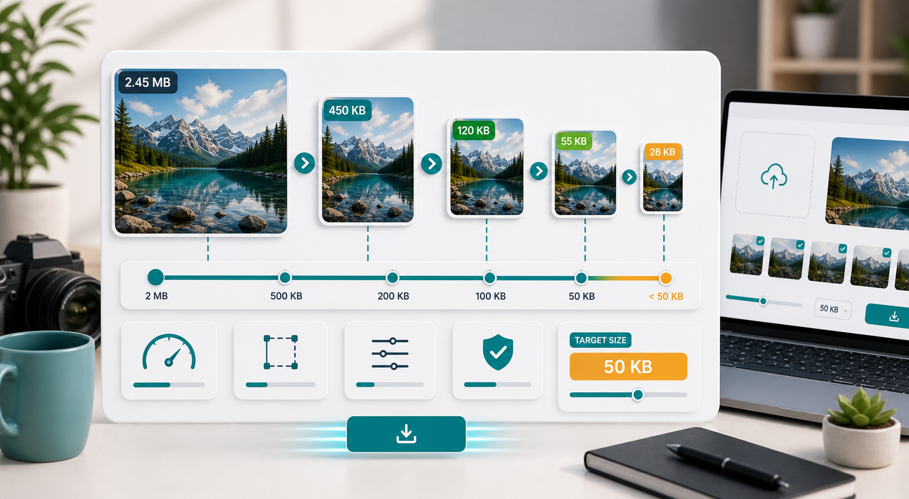

KB reduction
Reduce image size in KB online without guessing.

When a website asks for an image under a certain KB size, guessing can become annoying quickly. You compress once, the file is still too large. You compress again, the image looks bad. The better approach is to use three controls in the right order: dimensions, format, and quality.
Start with dimensions. Pixel width and height have a huge effect on file size. A 4000 pixel phone photo contains far more information than a 1000 pixel upload photo. If the image is for a form, profile, resume, school portal, or job application, it probably does not need full camera dimensions. Try reducing the width first, then compress.
Next, pick the right format. JPG is usually best for photos and profile pictures. PNG is useful for transparent images, signatures, and some sharp graphics, but it can be heavy. WebP often creates smaller files for web use, but some older upload forms do not accept it. Always follow the file types listed by the destination website.
Then adjust quality. For JPG photos, start around 70 percent. If you need a smaller KB size, move down slowly. For strict limits like 50KB or 100KB, you may need both lower dimensions and lower quality. The mistake is using only one lever. Very low quality on a huge image can still be large and ugly.
Metadata can also matter. Phone photos may include camera details, location data, and other information. Compression tools often remove unnecessary metadata during export, which helps reduce size. Still, metadata removal alone will not fix a massive image. Resize first.
Use the CompressPixel image compressor to test settings quickly. If your goal is exactly under 100KB, use the compress image under 100KB page. For very small limits, read the guides on compressing an image to 50KB and compressing an image to 200KB.
If you need a file under a specific limit, leave a little room. For example, if the form says 100KB maximum, aim for 95KB instead of exactly 100KB. Some systems calculate file size slightly differently, and a file that looks just under the limit on your computer may still be rejected.
For images with text, check readability after every major change. Reducing file size in KB is easy if you do not care about quality. The real skill is finding the point where the image is accepted and still useful. For certificates, screenshots, and ID documents, readability should guide the settings.
For photos, look at faces and smooth backgrounds. Heavy compression can create blotchy skin tones or strange patches in shadows. If that happens, reduce dimensions instead of pushing quality lower. A smaller photo with cleaner compression often looks better than a larger one with visible artifacts.
For repeat tasks, write down the settings that worked. If a job portal accepts a 900 pixel wide JPG at 68 percent quality, that note can save time the next time a similar form appears. Image compression becomes much easier once you stop guessing and build a few reliable presets for photos, signatures, screenshots, and documents. Those notes become your own mini upload checklist for future forms.
Keep one original copy and export new compressed versions from that original. Recompressing the same already-compressed file again and again can make quality worse. A clean workflow is faster: original image, resize, compress, check, upload.
Sources and further reading
- web.dev image performance explains how modern formats and smaller files reduce download time.
- Google Image SEO best practices is helpful when reduced images will be published on a website.